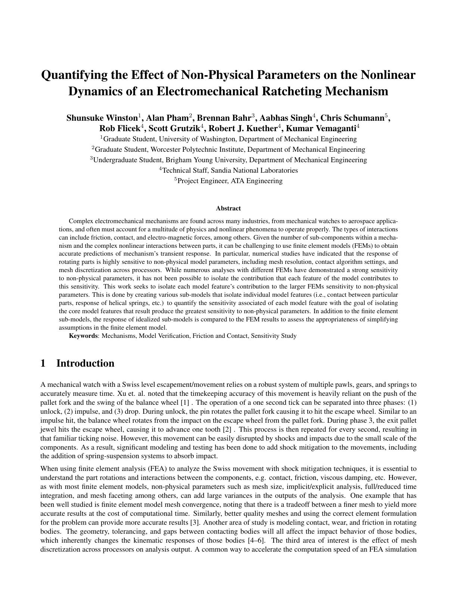
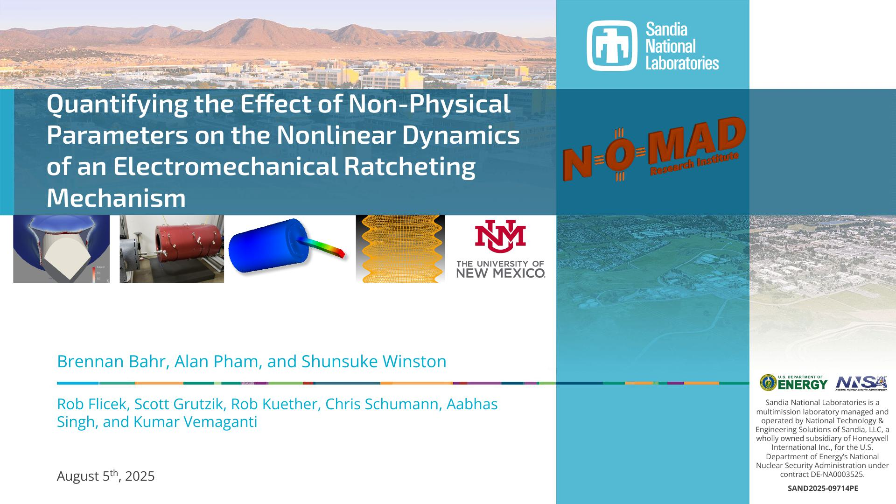

Coauthored paper
Five-page research paper with abstract, methods, submodel results, conclusions, acknowledgments, and references.
Open paper pageCoauthored Sandia/NOMAD research record for the ratcheting mechanism sensitivity study.
Sandia National Laboratories / NOMAD Research Institute
Summer 2025 internship work on finite-element setup choices, contact/friction behavior, and submodel-level verification for a watch-like ratcheting mechanism.
The study split the hold-pawl assembly into pin-spring-pawl, pin-pawl, and pawl-gear submodels, then varied non-physical model parameters to separate physical response from solver/setup sensitivity.
The pin-spring-pawl model converged across the parameter sweeps. Pin-pawl and pawl-gear cases showed stronger sensitivity where contact and friction dominated, especially under sinusoidal vibration.


Five-page research paper with abstract, methods, submodel results, conclusions, acknowledgments, and references.
Open paper page
Final internship presentation delivered August 5, 2025. The PDF is hosted here; the full PPTX is a release download because the source deck is 214 MB.
Alan's lab presentation summarizing the internship setting, application process, NOMAD structure, and research connection to soft robotics and compliant mechanisms.
Download PPTX